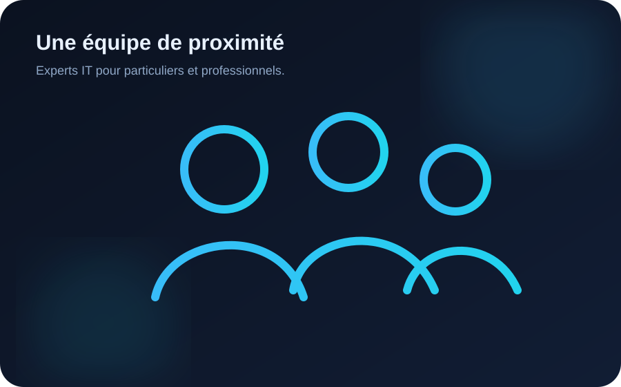

Proximité
Un interlocuteur disponible, des conseils compréhensibles et un suivi humain.
NovaTech Solutions est une entreprise indépendante créée pour rendre les services informatiques plus simples, accessibles et fiables.

Basée à Annecy, NovaTech Solutions accompagne les particuliers, indépendants, associations et petites entreprises dans la gestion de leur informatique.
Notre objectif : résoudre les problèmes rapidement, mais surtout mettre en place des solutions durables, sécurisées et compréhensibles par nos clients.
NovaTech Solutions démarre avec des prestations de dépannage informatique pour particuliers et indépendants.
L'entreprise élargit son offre à la maintenance, aux réseaux et à l'assistance à distance pour les TPE et PME.
Intégration de prestations de sécurisation, sauvegarde externalisée et sensibilisation des utilisateurs.
Une offre complète couvrant le poste de travail, l'infrastructure, la continuité d'activité et la sécurité.
Un interlocuteur disponible, des conseils compréhensibles et un suivi humain.
Des diagnostics expliqués, des devis lisibles et aucune intervention inutile.
La protection des données et des accès est intégrée à toutes nos recommandations.